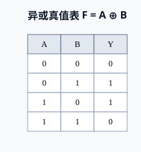
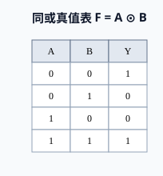
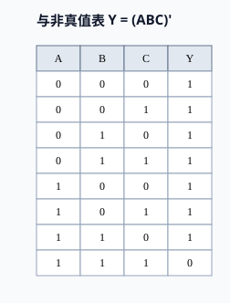
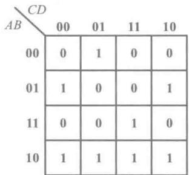
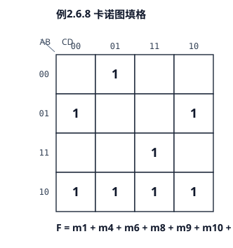
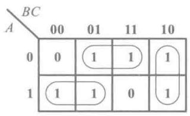
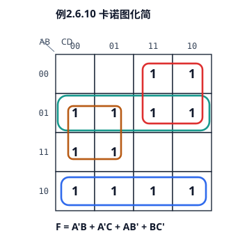
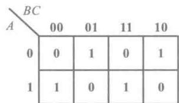
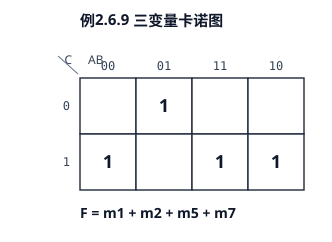
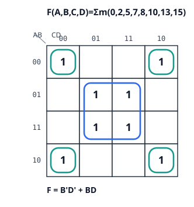

T01 · 异或真值表
课本为 Markdown 内嵌表格，左栏按原表复现
表 2.2.7 异或逻辑的真值表
| A | B | Y |
|---|---|---|
| 0 | 0 | 0 |
| 0 | 1 | 1 |
| 1 | 0 | 1 |
| 1 | 1 | 0 |

成功 7/7 · 2026-09-02 13:14 · 卡诺图限定 2/3/4 变量
课本为 Markdown 内嵌表格，左栏按原表复现
| A | B | Y |
|---|---|---|
| 0 | 0 | 0 |
| 0 | 1 | 1 |
| 1 | 0 | 1 |
| 1 | 1 | 0 |

| A | B | Y |
|---|---|---|
| 0 | 0 | 1 |
| 0 | 1 | 0 |
| 1 | 0 | 0 |
| 1 | 1 | 1 |

| A | B | C | Y |
|---|---|---|---|
| 0 | 0 | 0 | 1 |
| 0 | 0 | 1 | 1 |
| 0 | 1 | 0 | 1 |
| 0 | 1 | 1 | 1 |
| 1 | 0 | 0 | 1 |
| 1 | 0 | 1 | 1 |
| 1 | 1 | 0 | 1 |
| 1 | 1 | 1 | 0 |

仅填 1/0，不自动圈选


Y = AC' + A'C + BC' + B'C；圈法可能与课本 (a)/(b) 之一不同


Y = AB'C' + A'B'C + ABC + A'BC'


与 type_samples/06_kmap.svg 相同数据
